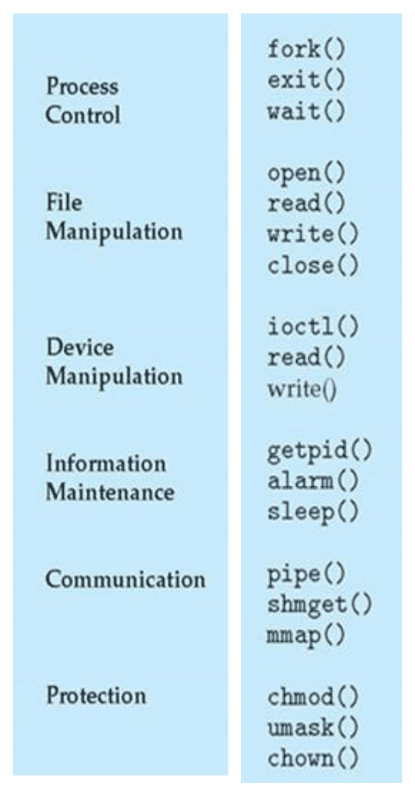
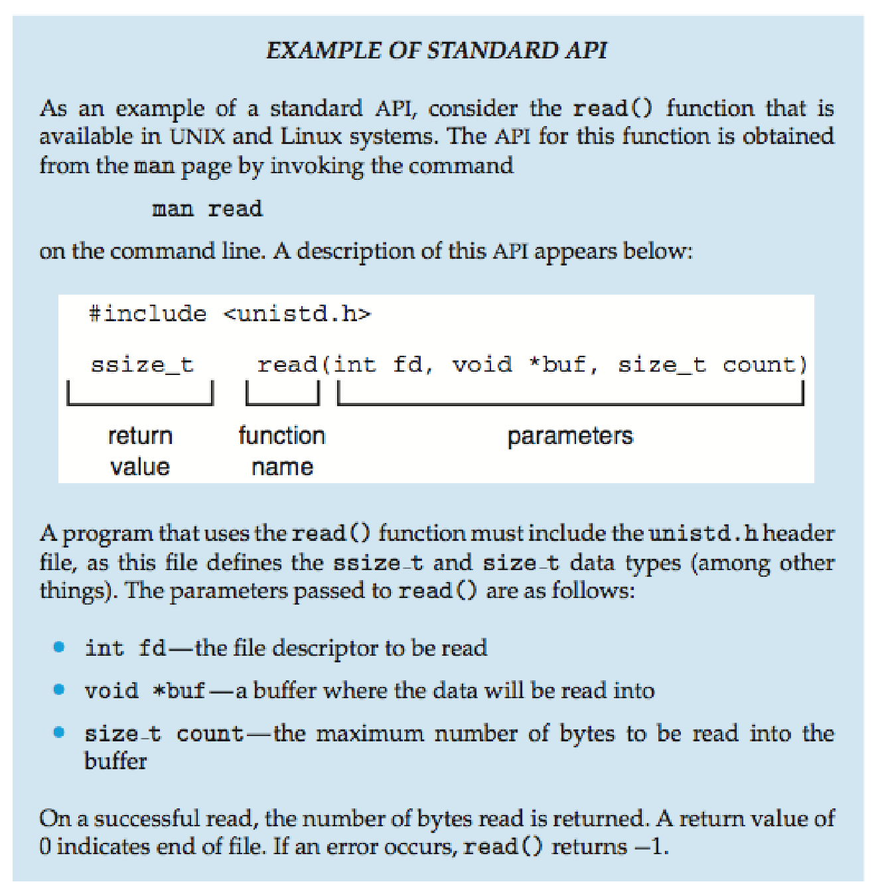
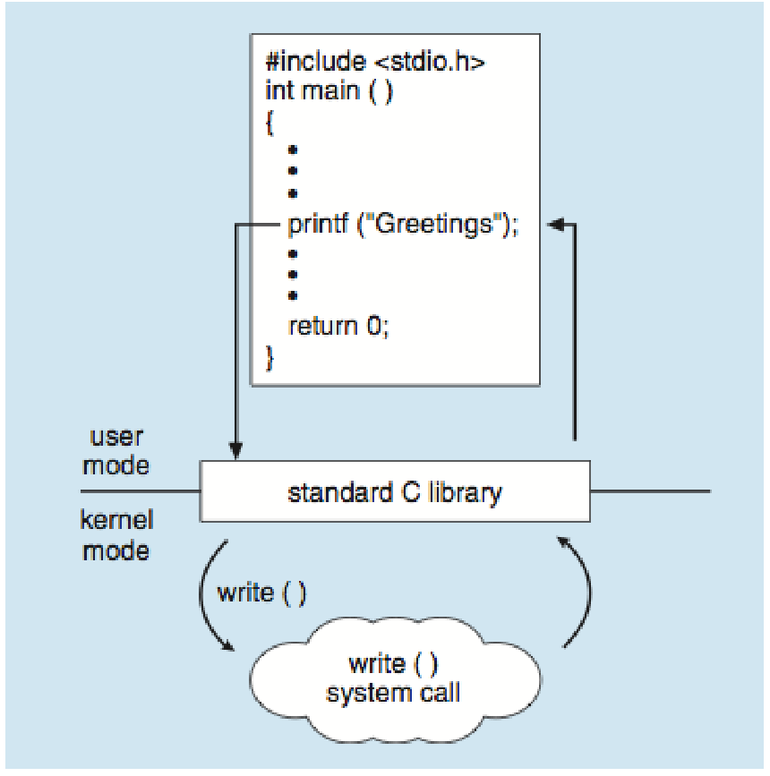
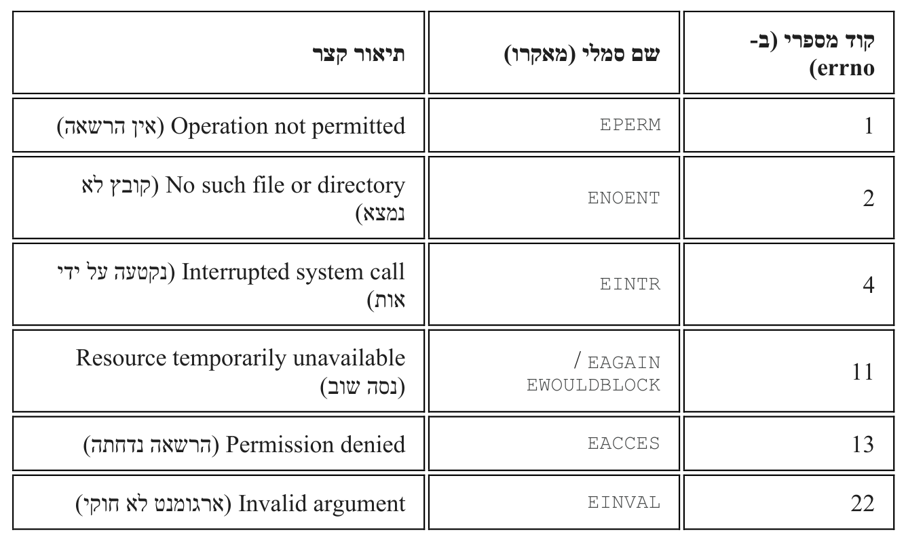

קריאות מערכת — לב ליבו של הקורס
⏱ זמן משוער: 45 דק'
1. מהי קריאת מערכת — ולמה אין דרך אחרת
כשתוכנית רגילה רוצה שירות מהמערכת — לפתוח קובץ, למשל — איך היא מדברת עם הקרנל? דרך המנגנון שסביבו סובב כל הקורס:
שלוש מילים שכל הפרק נשען עליהן
- הוראה (Instruction) — פקודה בודדת שהמעבד מבצע; אוסף ההוראות שהוא מכיר הוא ה-ISA שלו.
- מיוחסת מול לא-מיוחסת — ADD היא לא-מיוחסת; HALT (עוצרת את ה-CPU) היא מיוחסת — תוכנית שתריץ אותה תשתק את כל המחשב.
- מצב ריצה (privileged level) — "מתג" במעבד: מצב גרעין (kernel mode, הרשאה גבוהה) או מצב משתמש (user mode, הרשאה נמוכה). תכונה של המעבד ברגע נתון — לא של חשבון המשתמש.
תרשים "עוגת השכבות" שבשקפים: הרבה אפליקציות (Many applications), קרנל אחד (One Kernel), חומרה אחת (One Hardware) — ושלושה חיצים: אפליקציה ← חומרה (לא-מיוחסות בלבד, non-privileged), קרנל ← חומרה (גם מיוחסות), ואפליקציה ← קרנל — חץ ה-System calls.

למה זו הדרך היחידה?
כי המעבד אוכף את החלוקה בשלב הפענוח (Instruction Decode, בקיצור ID) של כל הוראה:
- הוראה לא-מיוחסת — מושלמת בכל מצב.
- הוראה מיוחסת — רק במצב גרעין. במצב משתמש המעבד מסרב ויוצר פסיקה (Interrupt) — קפיצה כפויה אל שגרת טיפול בקרנל — שמובילה להפסקה מיידית של התהליך. אין "לפרוץ פנימה": מי שרוצה שירות מיוחס חייב לבקש אותו — וזו קריאת המערכת.
מקור: apps-kernel.pdf
2. שש הקטגוריות של קריאות מערכת
השקפים מסווגים את קריאות המערכת לשש קטגוריות, עם דוגמאות בכל אחת:

ואותה טבלה בעברית, עם עמודה שמסבירה מה מבקשים בכל קטגוריה:
| קטגוריה | דוגמאות | מה מבקשים כאן |
|---|---|---|
| Process Control | fork(), exit(), wait() |
יצירה, סיום והמתנה לתהליכים |
| File Manipulation | open(), read(), write(), close() |
פתיחה, קריאה, כתיבה וסגירה של קבצים |
| Device Manipulation | ioctl(), read(), write() |
עבודה מול התקנים (מסך, מקלדת, דיסק) |
| Information Maintenance | getpid(), alarm(), sleep() |
מידע וזמנים על המערכת ועל התהליך |
| Communication | pipe(), shmget(), mmap() |
העברת מידע בין תהליכים |
| Protection | chmod(), umask(), chown() |
הרשאות ובעלות על קבצים |
מקור: kernel-sdlc.pdf (עמ' 23)
3. ה-API הסטנדרטי — read() כמקרה מבחן
API (Application Programming Interface) = "החוזה" של פונקציה: איך קוראים לה, מה מעבירים, ומה היא מחזירה. לכל קריאת מערכת יש חוזה כזה; השקפים מדגימים עם read().
מה זה עושה: פותח את דף התיעוד הרשמי (man page) של read, משם לוקחים את ה-API:
man readמה זה עושה: תיאור ה-API שמתקבל — שורת ה-include ושורת החתימה:
#include <unistd.h>
ssize_t read(int fd, void *buf, size_t count)בשקף, הסוגריים המרובעים מפרקים את החתימה לשלושה חלקים — ערך מוחזר (return value), שם הפונקציה (function name) ופרמטרים (parameters):

תוכנית שמשתמשת ב-read() חייבת לכלול את
unistd.h, שבו מוגדרים הטיפוסים
ssize_t ו-size_t.
קובץ כותרת (header file, סיומת .h) מכיל
הצהרות בלבד; #include מדביק את תוכנו לתוכנית לפני הקומפילציה.
ואלה הפרמטרים:
| פרמטר | משמעות |
|---|---|
int fd |
ה-file descriptor שממנו קוראים — המספר השלם שקיבלנו מ-open() ומזהה את הקובץ הפתוח |
void *buf |
ה-buffer שאליו ייקראו הנתונים — כלומר אזור זיכרון שהתוכנית שלכם הכינה מראש
(למשל מערך char buffer[4096]), "דלי" שהקרנל ימזוג לתוכו
|
size_t count |
מספר הבתים המקסימלי שייקראו אל תוך ה-buffer (בפועל ייתכן שפחות) |
וערכי החזרה: הצלחה — מספר הבתים שנקראו בפועל; 0 — סוף הקובץ (end of file, EOF); -1 — שגיאה.
מקור: kernel-sdlc.pdf (עמ' 24)
4. המסלול המלא: מ-printf() ועד הקרנל ובחזרה
מה קורה כשקוראים לפונקציה "רגילה" כמו printf()? השקפים עוקבים אחרי תוכנית C פשוטה.
מה זה עושה: תוכנית מינימלית שמדפיסה את המילה Greetings למסך:
#include <stdio.h>
int main ( )
{
...
printf ("Greetings");
...
return 0;
}שלב א' — printf() היא לא קריאת מערכת
printf() היא library call — קריאה לפונקציה מתוך ספרייה, כאן glibc (ה-standard C library של לינוקס). היא עצמה קוראת לקריאת המערכת write(), כי לבדה אינה יכולה לגעת במסך.
בתרשים, הספרייה התקנית (standard C library) יושבת בדיוק על הקו המפריד — מעליו user mode, מתחתיו kernel mode — וממנה יוצא חץ write ( ) אל הקרנל וחוזר לשורה שאחרי ה-printf:

שלב ב' — ה-wrapper של glibc
את המעבר מבצעת wrapper routine — קטע קוד קטן ב-glibc שיושב סביב כל קריאת מערכת. שני תפקידיה לפי השקף:
- להניח את ה-arguments של קריאת המערכת ברגיסטרים המתאימים של המעבד (ואולי גם על ה-call stack). רגיסטר = תא זיכרון זעיר בתוך המעבד, המקום היחיד שהוא עובד מולו ישירות.
- לקבוע system call number ייחודי שהקרנל יקרא — מספר שמזהה איזו קריאה התבקשה (ל-write מספר משלה, ל-read אחר). כך הספרייה מגדילה את הפורטביליות (portability): התוכנית קוראת ל-write() בשם, בלי להכיר את המספרים והרגיסטרים של ארכיטקטורת המעבד.
שלב ג' — חוצים את הגבול
ה-wrapper מפעיל את הוראת האסמבלי syscall —
פסיקת תוכנה יזומה — והמעבד עובר
מ-Ring 3 (מצב משתמש)
ל-Ring 0 (מצב גרעין). כלשון ה-handouts של המרצה:
"פקודת ה-syscall מעבירה את המעבד מ-Ring 3 ל-Ring 0". לכן פסיקות תוכנה הן
המנגנון העיקרי למימוש קריאות מערכת.
המסלול המלא, בשש תחנות:
- הקוד שלכם קורא לפונקציית ספרייה (printf) או ישירות לעטיפת קריאת מערכת (write). המעבד ב-Ring 3.
- ה-wrapper ב-glibc מניח את הארגומנטים ברגיסטרים וקובע את מספר קריאת המערכת.
- הוראת syscall — פסיקת תוכנה. המעבד עובר ל-Ring 0 ונכנס לנקודת כניסה מסודרת של הקרנל.
- ניתוב לפי המספר: נקודת הכניסה של הקרנל קוראת את מספר קריאת המערכת ומפעילה לפיו את פונקציית הליבה המתאימה.
- פונקציית הליבה רצה (sys_openat, sys_read, sys_write, sys_close…) — עכשיו במצב גרעין מותר גם להוראות מיוחסות ולגישה לחומרה.
- חזרה: המעבד חוזר ל-Ring 3, וערך ההחזרה מטפס מהקרנל אל ה-wrapper וממנו אל הקוד שלכם — לשורה שאחרי הקריאה.
מקור: kernel-sdlc.pdf (עמ' 25), apps-kernel.pdf, open.pdf, read.pdf
5. הצצה לקרנל: מה קורה בפנים ב-open / read / write / close
לכל אחת מארבע הקריאות יש בקרנל אלגוריתם מסודר, שלב אחר שלב (ה-handouts של המרצה, על Linux Kernel 6.14). כאן הצצה; הצלילה המלאה בפרקים FD, Inodes וארכיטקטורת I/O ו-File I/O מעשי.
open() — מהנתיב אל ה-FD
מה זה עושה: מקבלת נתיב לקובץ ומחזירה מספר שלם שמייצג אותו מכאן והלאה:
int open(const char *pathname, int flags, mode_t mode);Path Resolution (סריקת עץ הספריות) לאיתור ה-Inode — או יצירתו אם צוין O_CREAT והקובץ אינו קיים ← יצירת struct file ששומר את מצב הפתיחה ← מצביע אליו במקום הפנוי הראשון בטבלת תיאורי הקבצים ← החזרת האינדקס, ה-fd (בדרך כלל 3, כי 0, 1 ו-2 תפוסים).
read() — מהדיסק (או מהמטמון) אל ה-buffer
מה זה עושה: שואבת עד count בתים מהקובץ הפתוח אל תוך ה-buffer שלכם:
ssize_t read(int fd, void *buf, size_t count);אלגוריתם בן שמונה שלבים: מיפוי ה-fd לאובייקט הקובץ ← ווידוא שהקובץ נפתח לקריאה ← פנייה דרך שכבת ה-VFS. אם הנתונים כבר ב-Page Cache ב-RAM (Cache Hit) מדלגים על הדיסק, אחרת קוראים בלוקים מה-SSD ← copy_to_user אל ה-buffer ← קידום מצביע המיקום ← החזרת מספר הבתים שנקראו.
write() — כתיבה דרך המטמון
מה זה עושה: מעבירה count בתים מה-buffer שלכם אל הקובץ הפתוח:
ssize_t write(int fd, const void *buf, size_t count);אלגוריתם בן עשרה שלבים, לרוב כ-Buffered I/O: copy_from_user (הכיוון ההפוך מ-copy_to_user) מה-buffer אל ה-Page Cache ← סימון הדף כ"מלוכלך" (Dirty) ← כתיבה פיזית ל-SSD רק בהמשך, בידי תהליכי רקע של הקרנל, תוך רישום שינויי המטא-דאטה ביומן (Journaling) ← החזרת מספר הבתים שנכתבו.
close() — לא רק "סגירת חלון"
מה זה עושה: מודיעה לקרנל שסיימנו עם ה-fd הזה ומבקשת לשחרר את המשאבים:
int close(int fd);אלגוריתם בן שבעה שלבים: הסרת ה-FD מטבלת התהליך (מרגע זה כל read/write עליו ייכשלו, והמספר פנוי להקצאה מחדש) ← הפחתת מונה ההפניות (f_count) של אובייקט הקובץ המשותף — נחוץ כי fork(), dup(), dup2() גורמים לשני תהליכים (או שני FDs) להצביע על אותו אובייקט. ניקוי מלא רק אם המונה הגיע לאפס; אחרת הקובץ נשאר פתוח לשאר המחזיקים. בהצלחה מוחזר 0.
טבלת ערכי ההחזרה — לשינון
| קריאה | בהצלחה | בכישלון |
|---|---|---|
open() |
ה-fd — מספר שלם אי-שלילי | -1 |
read() |
מספר הבתים שנקראו · 0 = EOF | -1 |
write() |
מספר הבתים שנכתבו בפועל | -1 |
close() |
0 | -1 |
מקור: open.pdf, read.pdf, write.pdf, close.pdf
6. מנגנון השגיאות — errno ו-perror()
קריאה ממרחב המשתמש אל מרחב הליבה עשויה להיכשל מסיבות מגוונות: קובץ לא קיים, חוסר הרשאות, חוסר זיכרון או פרמטרים שגויים. לכן הליבה חייבת:
- לדווח על הכישלון — שהבקשה לא בוצעה בהצלחה.
- לספק את הסיבה הספציפית — כדי שהתהליך יוכל לנסות שוב, לדווח למשתמש או לסיים את פעולתו.
המשתנה errno
errno ("Error Number") — המנגנון
הסטנדרטי לדיווח על שגיאות מקריאות מערכת ומקריאות ספרייה
(Library Calls) ב-POSIX. כשקריאה נכשלת ומחזירה
-1, הליבה מעדכנת את errno למספר שלם חיובי — קוד
השגיאה הספציפי (2 = "אין קובץ או ספרייה כזו", 13 = "הרשאה נדחתה").
errno אינו משתנה גלובלי רגיל
מה זה עושה: תנאי הכרחי לשימוש ב-errno:
#include <errno.h>
הוא מגדיר את המאקרו של errno ואת
קודי השגיאה כמאקרואים (למשל
EACCES = "Access Denied") —
בלעדיו אי אפשר לכתוב if (errno == EACCES).
טבלת קודי השגיאה
לכל קוד מספרי יש שם סמלי (Symbolic Name) שמתחיל באות 'E':
| קוד מספרי (ב-errno) | שם סמלי (מאקרו) | תיאור קצר |
|---|---|---|
| 1 | EPERM |
Operation not permitted (אין הרשאה) |
| 2 | ENOENT |
No such file or directory (קובץ לא נמצא) |
| 4 | EINTR |
Interrupted system call (נקטעה על ידי אות) |
| 11 | EAGAIN / EWOULDBLOCK |
Resource temporarily unavailable (נסה שוב) |
| 13 | EACCES |
Permission denied (הרשאה נדחתה) |
| 22 | EINVAL |
Invalid argument (ארגומנט לא חוקי) |

איפה הטבלה הזו בכלל מוגדרת?
גם את זה המרצה הדגיש במרקר — ההבחנה היא בין השם לבין המספר:
- השמות הסמליים (
ENOENT,EACCES) — בקובץ הכותר<errno.h>שהתוכנית שלכם כוללת. - הערכים המספריים (ש-ENOENT הוא דווקא 2) —
בקובץ header (.h) של ה-kernel, למשל
asm-generic/errno-base.h, שמועתק לכותרות המשתמש בעת בניית המערכת. זו התשובה במבחן — לא קובץ ה-C, לא מצבי ה-CPU, ולא "אקראי בכל הרצה".
perror() — הודעת שגיאה בשפה טבעית
מה זה עושה: מקבלת מחרוזת אחת ואינה מחזירה דבר:
void perror(const char *s);
s היא מחרוזת של המתכנת, שמעידה איפה בתוכנית אירע הכישלון.
הפונקציה מדפיסה אותה ל-stderr (ערוץ נפרד מ-stdout
שאליו הולך הפלט הרגיל), ואחריה נקודתיים, רווח, תיאור השגיאה המילולי המתאים לערך הנוכחי של
errno, ולבסוף \n.
מה זה עושה: השימוש הקלאסי — ניסיון לפתוח קובץ, ואם נכשל, דיווח מיידי:
if (open("non_existent_file.txt", O_RDONLY) == -1) {
perror("Failed to open file");
// ... טיפול בשגיאה ...
}אם open נכשלה כי הקובץ לא נמצא (errno = 2 = ENOENT), הפלט יהיה:
Failed to open file: No such file or directoryמקור: error.pdf
7. עקרון היסוד: בודקים כל ערך החזרה
סעיף שלם בדף העזר של המרצה: יש לבדוק את ערך ההחזרה של כל קריאת מערכת וכל קריאת ספרייה שעלולה להיכשל — זו הדרך היחידה לזהות כישלון.
מה זה עושה: המבנה הטיפוסי — כותבים, בודקים, מדווחים, יוצאים:
ssize_t bytes_written;
// ...
bytes_written = write(fd, buffer, count);
if (bytes_written == -1) {
// 1. קריאת המערכת נכשלה
// 2. ה-kernel עדכן את ערך errno
perror("Error writing to file descriptor"); // הדפסת הודעת שגיאה קריאה
exit(EXIT_FAILURE);
}
// 3. אם הגענו לכאן, ה-write הצליח (ייתכן שרק חלקית)גם כש-write "הצליח", ייתכן שנכתבו פחות בתים מ-count — כתיבה חלקית. הטיפול המלא ב-Partial I/O בפרק File I/O מעשי.
הדוגמה המלאה של המרצה
מה זה עושה: ניסיון פתיחת קובץ שאינו קיים (או שאין הרשאה לפתוח אותו),
בדיקת ערך החזרה -1 ודיווח ב-perror().
stdlib.h נדרש עבור
EXIT_FAILURE / EXIT_SUCCESS:
#include <stdio.h> // עבור perror
#include <stdlib.h>
#include <unistd.h> // עבור קריאת המערכת close
#include <fcntl.h> // עבור קריאת המערכת open ודגלי גישה (O_RDONLY)
// הפונקציה המרכזית
int main() {
int fd;
const char *filename = "private_file.txt"; // קובץ שאינו קיים או נעול
printf("Attempting to open file: %s\n", filename);
// קריאת המערכת open(2)
// מחזירה file descriptor (ערך >= 0) במקרה של הצלחה, או -1 במקרה של כישלון
fd = open(filename, O_RDONLY);
// בדיקת ערך ההחזרה של קריאת המערכת
if (fd == -1) {
// הכישלון אושר. הליבה עדכנה את errno.
// שימוש ב-perror() לדיווח.
// פונקציה זו משתמשת בערך הנוכחי של errno ומדפיסה:
// "Failed to open file: [התיאור המילולי של קוד השגיאה]"
perror("Failed to open file");
// יציאה עם קוד כישלון
return EXIT_FAILURE;
}
// קוד זה יתבצע רק במקרה של הצלחה
printf("File opened successfully with file descriptor: %d\n", fd);
close(fd);
return EXIT_SUCCESS;
}מקור: error.pdf
8. בדיקה עצמית
מהי קריאת מערכת (System call), לפי ההגדרה שבשקפים?
לאיזו קטגוריה של קריאות מערכת שייכת הרביעייה open(), read(), write(), close()?
קריאה ל-read() החזירה את הערך 0. מה המשמעות?
מהו תפקידה העיקרי של רוטינת ה-wrapper בספריית glibc?
תהליך שרץ במצב משתמש מנסה לבצע את ההוראה המיוחסת HALT. מה יקרה?
היכן מוגדרים הערכים המספריים הממשיים של קודי השגיאה (ברמת המערכת)?
פונקציית הספרייה printf() היא חלק מחבילת תוכנה שמועתקת בזמן ההתקנה של מערכת ההפעלה Linux. איזו חבילה?
במהלך close() הקרנל הפחית את מונה ההפניות f_count, והמונה עדיין גדול מאפס. מה יקרה?
מדוע errno ממומש כמאקרו עם אחסון נפרד לכל תהליכון, ולא כמשתנה גלובלי רגיל?
תוכנית קראה ל-open() על קובץ שאינו קיים, ומייד אחר כך ל-perror("Failed to open file"). מה יודפס, ולאן?
סיימתם את הפרק? סמנו אותו כהושלם: